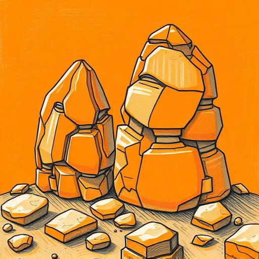
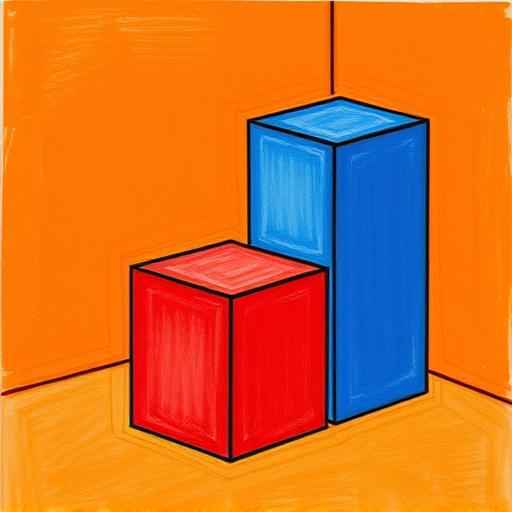
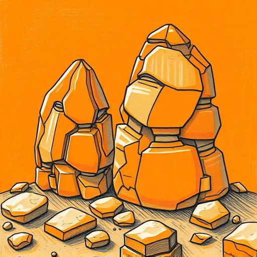
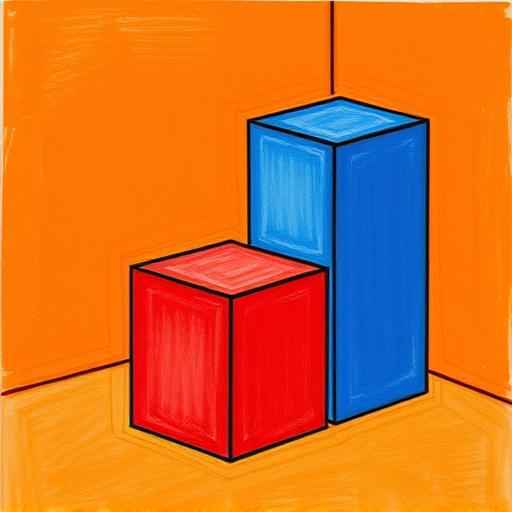

Reasoning Process
Question:
Given a user's reference images (both preferred and non-preferred images) and two candidate images, first predict the user's visual preference and non-preference profile based on the reference images, then assess which of the two candidate images better matches the user's personlized preference.
Answer:
<visual preference profile>
Art Style: Conceptual Art
Color: Mint Green
Art Medium: Macrame
Saturation: Grayish
Detail: Textured
</visual preference profile>
<visual non-preference profile>
Art Styles: Abstract Expressionism
Color: Dusty Orange
Art Medium: Drypoint
Saturation: Vibrant
Detail: Simplified
</visual non-preference profile>
1. Art style:
Image A (4) - The mint-colored mouse character sits atop what appears to be a stone pedestal with rope details, presenting a conceptual juxtaposition where everyday objects become symbolic representations through deliberate placement and context. This thoughtful arrangement aligns well with Conceptual Art principles focusing on ideas over pure aesthetics;
Image B (2) - The orange-hued mouse against a warm-toned background exhibits gestural brushstrokes and spontaneous markmaking qualities characteristic of Abstract Expressionism. The loose, emotive application of paint with expressive line work reflects the non-preferred abstract expressionist aesthetic rather than conceptually driven approaches.
2. Color:
Image A (5) - The dominant mint green color palette perfectly matches the preferred color attribute. From the soft teal-green background to the pale mint hues of the mouse itself, every element incorporates various shades of mint green, creating a cohesive and pleasing color scheme that strongly aligns with stated preferences;
Image B (1) - The image prominently features dusty orange tones throughout the background and parts of the mouse's body, precisely matching the non-preferred color attribute. These warm amber-orange hues dominate the composition, creating exactly the type of color environment specified as undesirable.
3. Art Medium:
Image A (4) - While primarily appearing as a digital illustration, the image incorporates actual physical textures like the woven rope around the base of the pedestal and the tactile-looking fur of the mouse. These tangible material elements evoke the dimensional quality of macrame, suggesting craft-based creation methods despite being digitally rendered;
Image B (2) - The image uses thin lines and sharp contrasts reminiscent of drypoint etching techniques, particularly evident in the defined outlines of the mouse figure. This linear approach with controlled mark-making shares similarities with the non-preferred drypoint medium, lacking the dimensional textile quality of macrame.
4. Saturation:
Image A (4) - The image employs a deliberately muted color palette with softened mint greens and subtle grays in the background, creating a subdued atmosphere. This restrained use of color intensity aligns well with the preferred grayish saturation level, allowing form and texture to take precedence over color strength;
Image B (2) - The image features highly vibrant colors with strong chromatic intensity, particularly in the bright orange background and vivid pink ear accents. This heightened color energy directly corresponds to the non-preferred vibrant saturation attribute, making the image visually stimulating but contrary to stated preferences.
5. Detail:
Image A (5) - The mouse illustration showcases rich textural elements including the intricate whiskers, fuzzy fur texture, and the dimensional rope wrapping around the pedestal. These tactile surfaces invite closer inspection, offering multiple layers of visual information that reward close viewing—perfectly embodying the preferred textured detailing;
Image B (2) - Despite having recognizable subjects, many elements appear simplified with minimal textural variation. The mouse's face and body lack nuanced surface details, instead relying on basic shapes and limited tonal shifts. This streamlined approach aligns with the non-preferred simplified detail attribute.
Total Score:
Image A: 4 + 4 + 4 + 4 + 5 = 21
Image B: 2 + 2 + 2 + 3 + 2 = 9
Image A
 


